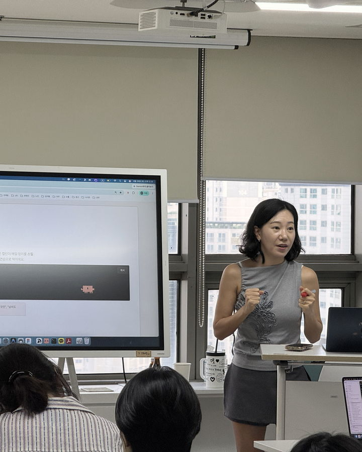
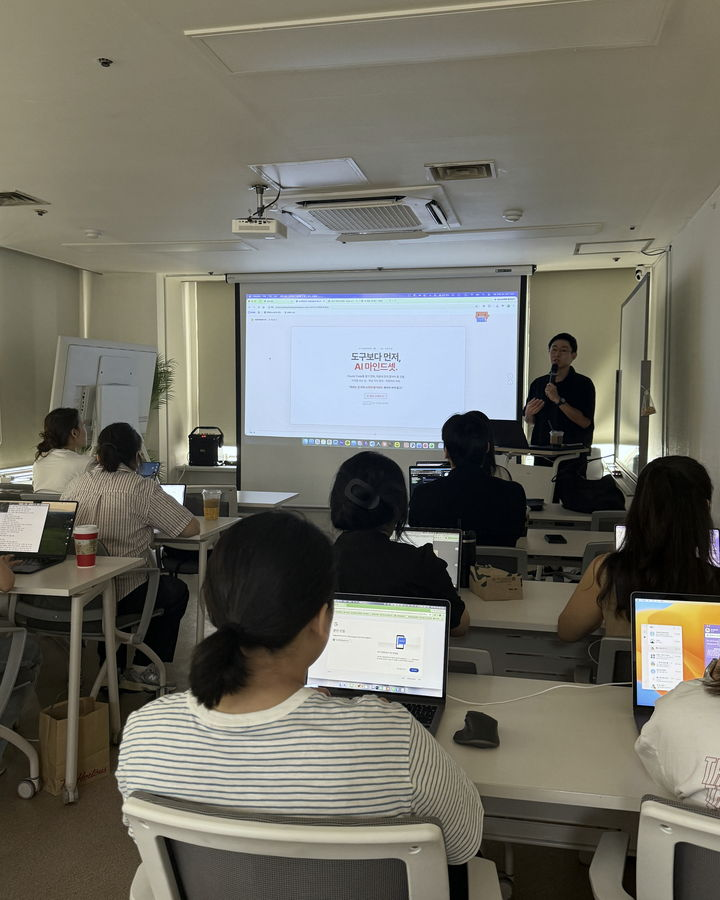
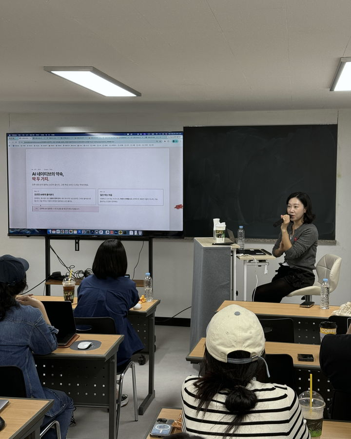
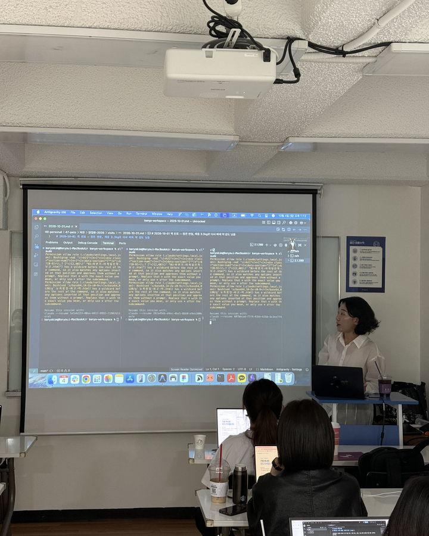
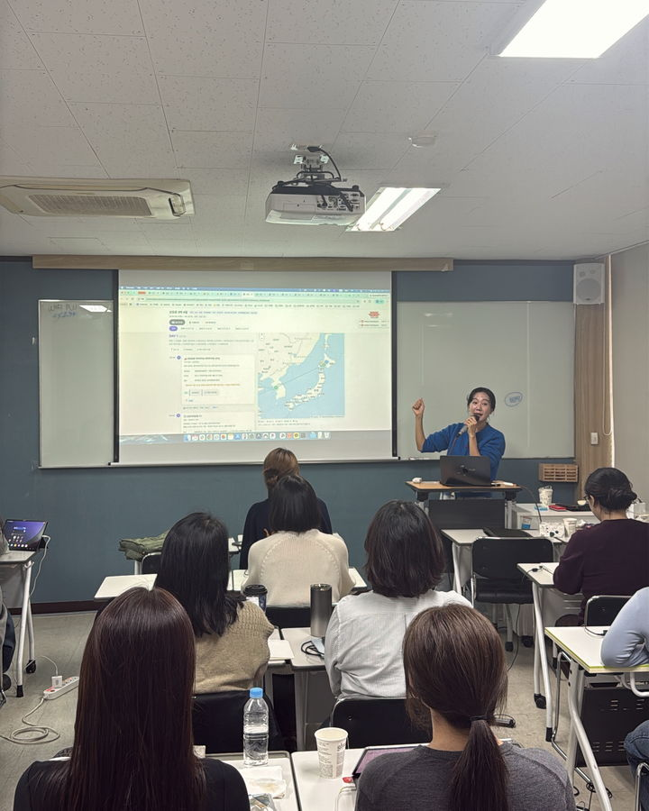
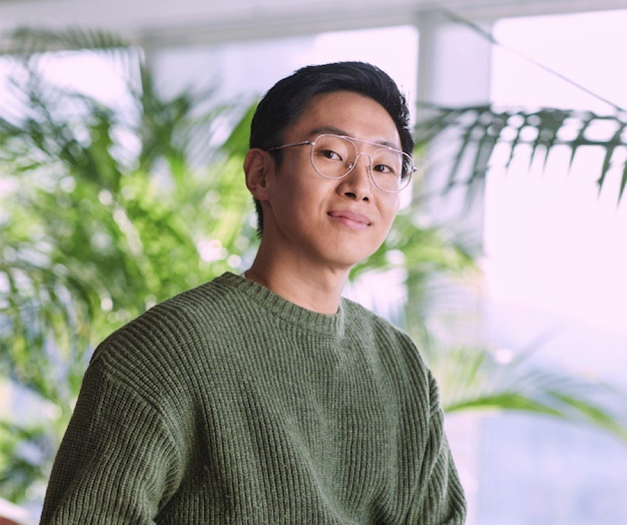
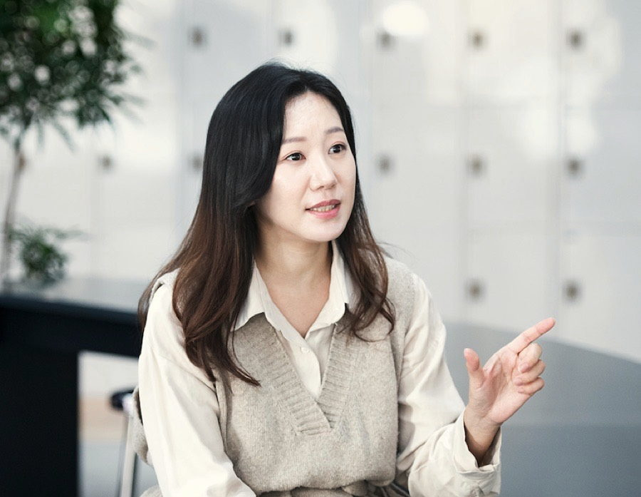

하루 7시간, 내 노트북에 시키면 끝까지 해내는
나만의 AI 작업환경을 세팅해서 돌아갑니다.
7시간을 이 순서로 씁니다.
배우는 대신 시킵니다.
AI에게 책상과 서랍을 줍니다.
한 번 정리하면 계속 쌓입니다.
반복 일은 스킬로, 맡길 역할은 에이전트로 만듭니다.
블록마다 산출물이 하나씩 남습니다.
AI에게 맡기는 사람의 관점부터 잡습니다.
기획 한 장으로 사이트를 만들어 배포합니다. 코드는 몰라도 됩니다.
"워크스페이스 생성해줘" 한마디로 나에게 맞는 작업환경을 만듭니다.
자료를 넣고 묻습니다.
자료가 지식이 되는 구조를 세웁니다.
내 반복 업무 하나를 말로 부리는 담당자로 만듭니다.
각자 만든 것을 공유하고 질문합니다.





두 강사가 본업에서 매일 돌리는 시스템입니다.
브랜드 사례를 AI가 모으고, 지난달과 비교한 리포트까지 만듭니다.
일정·메일·슬랙을 훑어 우선순위를 받고, 회의 녹음은 노션에 정리됩니다. 퇴근 전 회고까지 끝납니다.
내가 쓴 글로 문체를 학습시키고, 그 문체로 초안을 받아 발행합니다.
책·아티클·메모가 위키로 쌓이고, 강의안은 대상과 시간만 정하면 조립됩니다.
메시지만 정리하면 카드뉴스 초안이 나옵니다. 수정도 말로 합니다.
키워드를 검색 의도별로 나누고, 한 편을 쓰면 다른 채널용으로 파생시킵니다.


2026년 8월 1기부터 지금까지 함께한 분들입니다.
지난 기수 수강생이 남긴 말을 그대로 옮겼습니다.
실습이 막히는 원인은 대부분 이 세 가지입니다.
시연은 맥북 기준이며 윈도우 노트북도 참여할 수 있습니다. 최근 5년 내 구입한 개인 노트북을 권장합니다. 회사 노트북은 보안 프로그램 때문에 AI가 작동하지 않을 수 있습니다.
각자의 클로드 계정으로 실습합니다. Pro 플랜은 7시간 실습 중 사용 한도에 걸릴 수 있습니다. 첫 달은 Max 플랜(월 110달러)을 권장하며, 이후 사용량에 맞춰 조정하면 됩니다.
현장에서 함께 만드는 과정이라 온라인 진행과 녹화본 제공은 하지 않습니다.
신청과 결제는 기수별 래피드 페이지에서 진행됩니다.